Giới thiệu công nghệ Bluetooth Low Energy
-
Trước hết cần nói rằng BLE không phải là tất cả, nó không thay thế hoàn toàn các chuẩn truyền thông không dây khác như Wifi, Zigbee,… hay thậm chí là Bluetooth Classic (2.0). Nó được thiết kế với mục đích chuyên biệt hơn, với miền ứng dụng cụ thể hơn.
-
BLE (Bluetooth 4.0 trở đi) được thiết kế cho các ứng dụng:
-
Siêu tiết kiệm năng lượng, cho phép thiết bị hoạt động trong vài tháng hoặc vài năm chỉ với một viên pin đồng xu (coin-cell battery);
-
Khoảng cách ngắn, hoạt động ổn định trong phạm vi 10m;
-
Dữ liệu truyền tải không lớn, thích hợp cho các ứng dụng điều khiển không liên tục, cảm biến.
-
-
Các ứng dụng điển hình sử dụng BLE như thiết bị theo dõi sức khỏe, beacons, nhà thông minh, an ninh, giải trí, cảm biến tiệm cận, ô tô. Trung tâm của một hệ thống ứng dụng BLE thường là Smart phones, tablets và PCs.
Lịch sử phát triển công nghệ Bluetooth

Bo mạch VBLUno của VNGIoTLab sử dụng chip Nordic nRF51822, hiện tại hỗ trợ đến chuẩn Bluetooth 4.2
Điều gì làm BLE trở nên khác biệt?
-
Sự phát triển mạnh của các thiết bị thông minh dẫn đến nhu cầu kết nối các thiết bị với bên ngoài tăng mạnh. Trong khi BLE được tích hợp trong hầu hết các điện thoại thông minh.
-
Giá thành thấp.
-
BLE cho phép các thiết bị có thể “nói chuyện” với các nền tảng di động hiện đại.
-
Một số thiết bị chỉ cần truyền nhận một lượng nhỏ dữ liệu cho mỗi chu kỳ kết nối và chúng cũng cần tiết kiệm năng lượng, ví dụ như thiết bị theo dõi nhịp tim, thiết bị quản lý trẻ em,…
-
BLE có mô hình dữ liệu tương đối dễ hiểu, không cần chi phí giấy phép với một Protocol stack không quá phức tạp.
Các kiểu thiết bị Bluetooth.
- Tài liệu Bluetooth Specification (4.0 trở đi) định nghĩa hai công nghệ không dây sau:
- BR/EDR (Classic Bluetooth)
- BLE (Bluetooth Low Energy)
Các kiểu thiết bị Bluetooth phổ biến hiện nay được khái quát trong hình dưới:
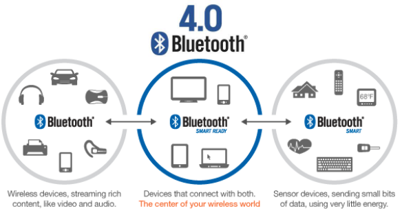
Như hình trên ta thấy, thiết bị BLE gồm hai loại là Bluetooth Smart và Bluetooth Smart Ready.
-
Bluetooth Smart (Single mode): Chỉ có thể giao tiếp với thiết bị Bluetooth Smart hoặc Bluetooth Smart Ready
-
Bluetooth Smart Ready (Dual mode): Có thể giao tiếp được các loại thiết bị Bluetooth như Bluetooth Smart, Bluetooth Smart Ready và Classic Bluetooth.
Chip nRF51822 thuộc loại Bluetooth Smart.
Các khối chính của một thiết bị Bluetooth
-
Mỗi thiết bị Bluetooth gồm 3 khối chính sau:
-
Application: Ứng dụng người dùng giao tiếp với Bluetooth protocol stack.
-
Host: Các lớp trên của Bluetooth protocol stack.
-
Controller: Các lớp dưới của Bluetooth protocol stack, bao gồm chức năng truyền nhận radio.
-
(Bluetooth Protocol Stack: Bộ giao thức dạng stack cho phép các thiết bị Bluetooth thiết lập, kết nối, truyền nhận dữ liệu với nhau)
Ba khối chính của một thiết bị Bluetooth được tích hợp vào phần cứng theo nhiều kiểu khác nhau, dưới đây là 3 kiểu cấu hình phần cứng chính:
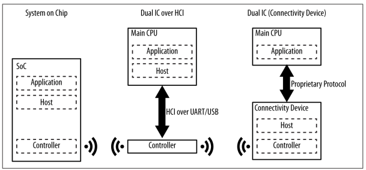
Chip nRF51822 thuộc loại System on Chip (SoC), các thành phần của Bluetooth được tích hợp trong một chip duy nhất.
Các giới hạn chính của BLE
- Thông lượng dữ liệu nhỏ:
Tần số điều chế của sóng BLE trong không gian là 1Mbps. Đây là giới hạn trên của thông lượng theo lý thuyết. Tuy nhiên trong thực tế tham số này nhỏ hơn do ảnh hưởng của nhiều yếu tố.
Để minh họa ta đặt giả thiết là một thiết bị trung tâm (Master) được khởi tạo và thiết lập kết nối đến một ngoại vi (Slave) qua giao diện BLE:
-
Ta có khái niệm về chu kỳ kết nối (Conneciton interval), đây là khoảng thời gian giữa 2 sự kiện kết nối liên tiếp. Với BLE, khi một sự kiện kết nối diễn ra, các thiết bị trong kết nối sẽ trao đổi dữ liệu với nhau, sau đó trở về trạng thái IDLE để tiết kiệm năng lượng, và chờ đến thời điểm thì thực hiện sự kiện kết nối tiếp theo. Tham số này nằm trong khoảng 7.5ms đến 4s.
-
nRF51822 có thể truyền đến 6 gói dữ liệu trong mỗi sự kiện kết nối. Mỗi gói có thể chứa 20 bytes dữ liệu của người dùng.
-
Giả sử tần số sự kiện kết nối là lớn nhất (chu kỳ kết nối nhỏ nhất = 7.5ms). Khi đó mỗi giây có thể xảy ra tối đa 133 sự kiện kết nối
–> Công thức tính thông lượng: 133 * 120 = 15960 bytes/s (125Kbit/s)
Theo khuyến cáo thì ta nên lựa chọn thông lượng khoảng 80 Kbit/s. Điều này cũng nói lên vì sao Wifi, classic bluetooth vẫn có chỗ đứng.
- Khoảng cách gần
Các yếu tố ảnh hưởng đến khoảng cách truyền thông như môi trường hoạt động, thiết kế anten, vật cản, hướng thiết bị,…. BLE tập trung vào các ứng dụng truyền thông trong phạm vi gần.
-
Với BLE ta có:
-
Khoảng cách lý thuyết: 100m (điều kiện tốt).
-
Khoảng cách khả thi: 30m.
-
Khoảng cách thường được sử dụng: 2-5m.
-
Mô hình mạng truyền thông cho BLE
Một thiết bị BLE có thể giao tiếp với bên ngoài thông qua 2 cơ chế: Broadcasting hoặc Connection. Mỗi cơ chế có thế mạnh và giới hạn riêng, cả hai được thiết lập bởi GAP (Generic Access Profile).
Broadcasting và Observing
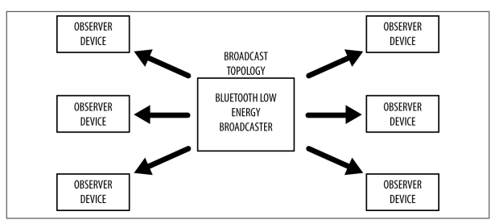
-
Thiết bị Broadcaster: Gửi các gói tin quảng bá phi kết nối đến bất kỳ thiết bị nào có thể nhận.
-
Thiết bị Observer: Quét liên tục theo tần số đặt trước để nhận các gói tin quảng bá phi kết nối
Đây là kiểu truyền thông cho phép một thiết bị có thể truyền dữ liệu đến nhiều thiết bị khác nhau cùng lúc (một chiều). Đây là cơ chế nhanh chóng và dễ sử dụng, là lựa chọn tốt nếu muốn truyền lượng nhỏ dữ liệu đến nhiều thiết bị cùng lúc. Hạn chế là dữ liệu không được bảo đảm an ninh, vì thế không phù hợp để truyền các dữ liệu nhạy cảm.
Connection
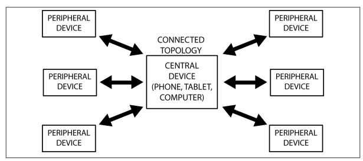
-
Thiết bị Central (Master): Quét các gói tin quảng bá hướng kết nối theo tần số đặt trước, khi phù hợp thì khởi tạo một kết nối với một peripheral. Central quản lý timing và bắt đầu những sự trao đổi dữ liệu theo chu kỳ.
-
Thiết bị Peripheral (Slave): Phát các gói tin quảng bá hướng kết nối theo chu kỳ và chấp nhận kết nối do central yêu cầu.
-
Khởi tạo kết nối:
-
Khi muốn kết nối, slave phát các gói tin quảng bá ra không gian.
-
Central nhận được các gói tin quảng bá của slave, trong đó chứa các thông tin cần thiết cho phép kết nối với slave đó.
-
Dựa trên đó, central gửi yêu cầu kết nối đến slave để thiết lập một kết nối riêng giữa hai thiết bị.
-
Khi kết nối được thiết lập, slave dừng quảng bá và hai thiết bị có thể bắt đầu trao đổi dữ liệu hai chiều. Vai trò Master và Slave không ảnh hưởng đến việc truyền dữ liệu, mặc dù Master là bên quản lý thiết lập kết nối.
-
-
Lợi thế của Connection so với Broadcasting là:
-
Thông lượng cao.
-
Khả năng thiết lập kết nối liên kết mã hóa an ninh.
-
Khả năng quản lý năng lượng tối ưu hơn.
-
Khả năng tổ chức dữ liệu với nhiều sự thay đổi phù hợp cho các thuộc tính thông qua việc sử dụng các lớp giao thức bổ sung thêm, đặc biệt là Generic Attribute Profile (GATT). Dữ liệu được tổ chức theo cấu trúc có ý nghĩa xoay quanh cái gọi là services và characteristics.
-
Protocols và Profiles
Để hai thiết bị có thể giao tiếp với nhau thông qua chuẩn BLE, các thiết bị BLE cần tuân thủ một số quy định. Các quy định này được khái quát hóa thành các giao thức và cấu hình.
-
Protocol (Giao thức): Tập các luật quy định việc định dạng gói tin, định tuyến, dồn kênh, mã hóa,… để trao đổi dữ liệu giữa các bên.
-
Profile (Cấu hình): Định nghĩa cách mà giao thức được dùng để đạt các mục tiêu cụ thể. Có hai loại cấu hình là cấu hình chung (generic profiles) và cấu hình cụ thể theo trường hợp sử dụng (use-case profiles)
-
Generic profiles: các profile cơ sở được định nghĩa trong tài liệu Bluetooth Specifications, đặc biệt là hai profiles không thể thiếu giúp các thiết bị BLE kết nối và trao đổi dữ liệu với nhau, GAP và GATT.
-
Use-case profile: Các profile cho các trường hợp sử dụng cụ thể
-
Các profile do Bluetooth Special Interest Group (SIG) định nghĩa
-
Các profile do vendor tự định nghĩa
-
-
The BLE Protocols Stack
Để lập trình cho thiết bị BLE, có thể chỉ cần quan tâm đến các hàm API ở lớp trên của bộ giao thức BLE (BLE protocol stack), nhưng tốt hơn hết chúng ta nên bắt đầu với một cái nhìn cơ bản về bộ giao thức cho BLE, giúp cung cấp kiến thức nền tảng để có thể nghiên cứu sâu hơn về BLE.
Hình dưới thể hiện đầy đủ về các thành phần bên trong bộ giao thức BLE cho thiết bị Bluetooth Smart.
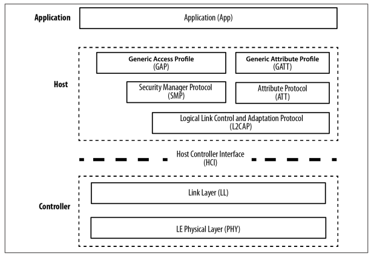
-
Bộ giao thức cho thiết bị BLE được chia thành 3 phần chính: controller, host và application. Mỗi phần bao gồm một hoặc nhiều lớp (layer) theo chức năng:
-
Application: Là lớp cao nhất của bộ giao thức, cung cấp giao diện người dùng, xử lý logic, và điều khiển dữ liệu của mọi thứ liên quan đến các trường hợp hoạt động của ứng dụng. Kiến trúc của application phụ thuộc nhiều vào từng bài toán cụ thể.
-
Host: bao gồm các lớp sau
-
Generic Access Profile (GAP)
-
Generic Attribute Profile (GATT)
-
Attribute Protocol (ATT)
-
Security Manager (SM)
-
Logical Link Control and Adaptation Protocol (L2CAP)
-
Host Controller Interface (HCI), Host side
-
-
Controller: bao gồm các lớp sau
-
Host Controller Interface (HCI), Controller side
-
Link Layer (LL)
-
Physical Layer (PHY)
-
-
Bảng tổng hợp chức năng của các lớp trong stack

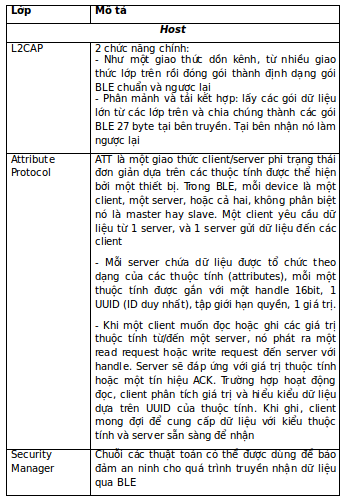

Tóm lại, BLE protocol stack bao gồm nhiều lớp, mỗi lớp đảm nhiệm một vài chức năng nhất định giúp thực hiện quá trình giao tiếp giữa các thiết bị BLE với nhau.
Các profiles cơ sở: GAP và GATT
GAP (Advertising and Connections)
-
GAP (Generic Access Profile) là nền tảng cho phép các thiết bị BLE giao tiếp với nhau. Nó cung cấp một framework mà bất cứ thiết bị BLE nào cũng phải tuân theo để có thể tìm kiếm các thiết bị BLE (Bluetooth) khác, quảng bá dữ liệu, thiết lập kết nối an ninh, thực hiện nhiều hoạt động nền tảng theo một chuẩn.
-
Tài liệu BLE Specifications định nghĩa các khái niệm sau khi xét đến sự tương tác giữa các thiết bị:
-
Roles: Mỗi thiết bị có thể hoạt động theo một hoặc nhiều vai trò khác nhau tại cùng một thời điểm: broadcaster, observer, central, peripheral.
-
Modes: Một mode là một trạng thái mà thiết bị có thể chuyển đến trong một khoảng thời gian để đạt được một mục đích cụ thể hoặc nhiều điều đặc biệt, để cho phép một peer thực hiện một thủ tục cụ thể.
-
Procedures: Là các thủ tục (thường thì Link Layer điều khiển sự trao đổi gói tin) để cho phép một thiết bị đạt được một mục đích chắc chắn. Một thủ tục thường được liên kết với một mode, nên mode và procedure thường được xem xét cùng nhau.
-
Security: GAP xây dựng dựa trên Security Manager và Security Manager Protocol (định nghĩa các modes và procedures an ninh để xác định cách mà các thiết bị đặt mức an ninh khi trao đổi dữ liệu). Ngoài ra GAP định nghĩa thêm các tính năng an ninh cao hơn mà không gắn với modes và procedures cụ thể nào, tăng cường mức bảo vệ dữ liệu được yêu cầu bởi mỗi ứng dụng.
-
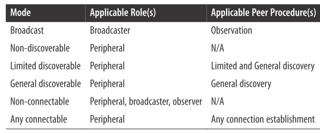

Xét một cách bản chất thì GAP là lớp điều khiển cao nhất của BLE (Topmost control layer) và là cấu hình bắt buộc cho tất cả thiết bị BLE.
GATT (Services and Characteristics)
-
GATT thiết lập chi tiết cách trao đổi tất cả profile và dữ liệu người dùng qua kết nối BLE. Ngược lại với GAP (định nghĩa sự tương tác mức thấp với các thiết bị), GATT chỉ trình bày các thủ tục truyền và định dạng dữ liệu thực tế
-
GATT sử dụng ATT và giao thức truyền của nó để trao đổi dữ liệu giữa các thiết bị. Dữ liệu này được tổ chức phân cấp thành các phần gọi là services, nó nhóm các phần khái niệm liên quan của dữ liệu người dùng gọi là characteristic. Nói một cách ngắn gọn thì dữ liệu truyền qua BLE là dữ liệu có cấu trúc, mà cụ thể là được tổ chức phân cấp thành services và characteristics.
Roles
-
GATT Client: tương ứng với ATT client, gửi yêu cầu đến server và nhận kết quả phản hồi. Ban đầu, GATT Client không biết server hỗ trợ những thuộc tính nào vì thế nó cần phải thực hiện service discovery.
-
GATT Server: tương ứng ATT server, nhận yêu cầu từ client và gửi những nội dung tương ứng.
-
Chú ý rằng các vai trò của GATT không phụ thuộc vào vai trò của GAP. Có nghĩa là cả GAP Central và GAP Peripheral có thể hoạt động như GATT Client hoặc GATT Server hoặc thậm chí là cả hai tại cùng một thời điểm.
UUIDs
- Là một số định danh thiết bị, dài 128 bit (16 byte) duy nhất trên thế giới. Vì độ dài quá lớn, chiếm phần lớn trong gói dữ liệu, BLE Specification định nghĩa thêm 2 định dạng UUID: 16bit và 32 bit. Các định dạng ngắn này có thể chỉ được sử dụng với UUID được định nghĩa trong BT Specification.
Attributes
-
Là thực thể dữ liệu nhỏ nhất được định nghĩa bởi GATT (và ATT).
-
Cả GATT và ATT chỉ làm việc với attributes nên để tương tác giữa client và server tất cả dữ liệu phải được tổ chức theo định dạng này.
-
Mỗi attribute chứa thông tin về chính nó là dữ liệu người dùng và được mô tả như sau:
-
Handle: số 16 bit duy nhất trên mỗi server để địa chỉ hóa attribute
-
Type:là kiểu UUID, 16bit – 32bit – 128 bit
-
Permission: xác định các ATT opertation có thể thực thi trên attribute cụ thể
-
Value: chứa phần dữ liệu thực tế trong attribute, giới hạn 512 byte
-
Services và Characteristics
Dữ liệu trao đổi thông qua kết nối BLE là dữ liệu có cấu trúc, được tổ chức phân cấp thành các services, bản thân services lại bao gồm các characteristics.
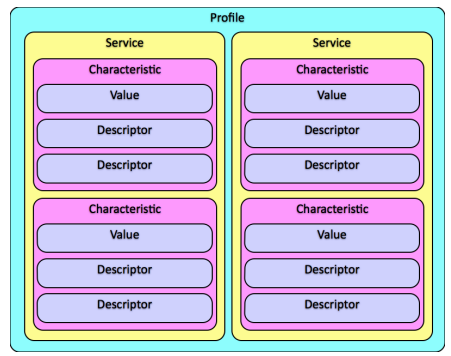
Các profiles cho từng ứng dụng cụ thể
GAP và GATT là hai profiles nền tảng cho mọi ứng dụng BLE. Ngoài ra, tùy ứng dụng mà các thiết bị sẽ cung cấp các profile khác (dựa trên GAP và GATT). Các services chính là các dịch vụ mà thiết bị cung cấp như: Heart Rate Monitor, Battery, Health Thermometer, HID,…
Để biết thông tin chi tiết các services, truy cập các đường dẫn sau:
https://www.bluetooth.com/specifications/adopted-specifications https://www.bluetooth.com/specifications/gatt/services
Các đường dẫn trên trình bày các profiles đã được tổ chức Bluetooth SIG định nghĩa. Ngoài ra các nhà sản xuất thiết bị có thể tự định nghĩa thêm các profiles khác.
Ví dụ minh họa thiết bị theo dõi nhịp tim với bo mạch VBLUno51 trên Arduino
- Thiết bị theo dõi nhịp tim: Heart Rate Monitor– HRM
Hình dưới thể hiện cấu trúc của Heart Rate Service (HRS)

- Ta thấy, HRS bao gồm 2 characteristics giúp cung cấp thông tin về nhịp tim và vị trí gắn cảm biến trên cơ thể. Chi tiết có thể xem tại đường dẫn sau:
https://www.bluetooth.com/specifications/gatt/viewer?attributeXmlFile=org.bluetooth.service.heart_rate.xml
-
Ví dụ sau minh họa một thiết bị BLE có chức năng đo nhịp tim và truyền về BLE Central (Smartphones, tablets, PC). Vì không có cảm biến hỗ trợ tính năng này nên trong ví dụ này mình chỉ tạo giả tín hiệu theo mô tả sau:
-
Giá trị nhịp tim thay đổi tuyến tính từ 100 đến 175 với độ tăng là 1
-
Vị trí cảm biến trên cơ thể: Finger (mã = 0x03)
-
-
Thực hiện:
-
Mở ví dụ HRM:
File => Examples => BLE_Examples => BLE_HRM -
Tiến hành biên dịch và upload xuống bo mạch VBLUno. Nếu thành công bạn đã có một thiết bị BLE minh họa tính năng theo dõi nhịp tim.
-
Để kết nối đến thiết bị này, bạn cần một BLE Central (Smart phone, tablet, PC). Ở đây mình dùng phần mềm nRF Toolbox của Nordic và phần mềm BLE Tool để minh họa.
-
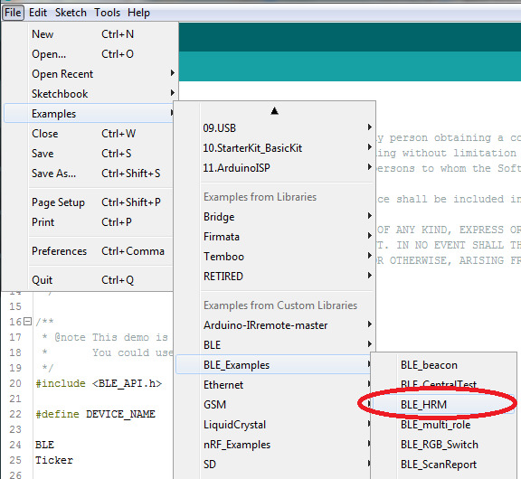
Trên điện thoại Android hoặc iPhone, chạy phần mềm nRF Toolbox, chọn mục HRM, nhấn Connect để tìm kiếm thiết bị HRM và yêu cầu kết nối.
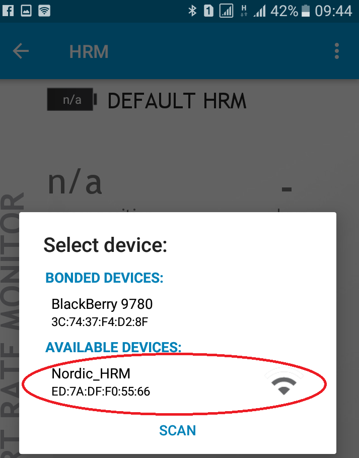
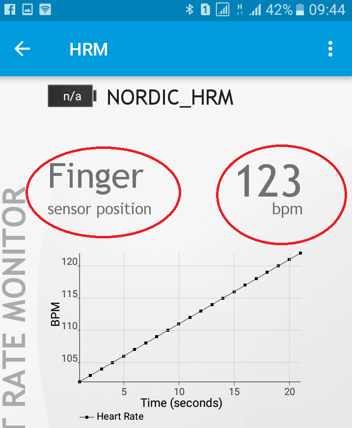

Mã nguồn của chương trình ví dụ khá đơn giản, bạn có thể tự đọc và tìm hiểu.
Sách giới thiệu về BLE
Để tìm hiểu thêm về BLE các bạn có thể tham khảo một số tài liệu sau:
-
Getting started with Bluetooth Low Energy – Tool and techniques for low-power networking của Kevin Townsend, Carles Cufí, Akiba & Robert Davidson.
-
Bluetooth Low Energy – The developer’s handbook, Robin Heydon